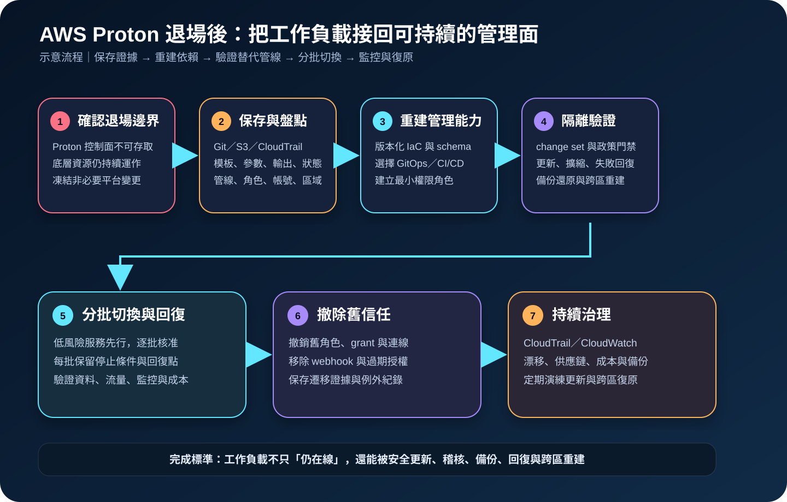

AWS Proton：服務退場與平台工程遷移治理
AWS Proton 曾以版本化環境模板、服務模板與一致的開發者入口協助平台團隊交付基礎設施。AWS 已於 2026 年 10 月 7 日終止支援；目前重點不是建立新 Proton 工作負載，而是確認既有資源仍可獨立運作，並把模板、部署管線、權限、狀態與維運責任遷移到可持續的工具鏈。
作者：Dr. William｜查閱與發布：2026-11-19
服務定位
AWS Proton 原本是平台工程與應用交付服務。平台團隊可將共用基礎設施定義成 environment template，將應用或微服務所需資源定義成 service template，再由開發團隊選擇已核准版本、輸入受控參數並部署到指定 environment。它把平台標準、基礎設施即程式碼與開發者自助入口組合成一致流程。
Proton 曾支援 AWS-managed provisioning、CodeBuild provisioning 與 self-managed provisioning。前者由 Proton 透過 CloudFormation 佈建；CodeBuild 模式執行客戶提供的命令，可搭配 AWS CDK 等工具；self-managed 模式則由 Proton 對指定儲存庫提出變更，再由客戶自己的 Terraform 流程完成部署。這些模式都依賴客戶定義的模板、角色、程式碼儲存庫、管線與底層服務。
終止支援後，Proton 不再是可用的控制面。已部署資源沒有因此自動刪除，但若仍依賴 Proton 進行更新、重新部署、狀態查詢、模板發布或管線協調，該管理路徑已中斷。治理目標應轉為「讓底層資源脫離失效控制面後仍可被辨識、更新、監控、備份與復原」。
核心概念與退場邊界
原有平台模型
- Environment template：定義 VPC、叢集等共用基礎設施及輸入結構。
- Environment：依環境模板建立的實際共用基礎設施。
- Service template：定義應用或微服務所需資源、服務執行個體與管線。
- Service／service instance：應用定義及其部署到特定環境後的執行個體。
- Template version：讓平台團隊發布、測試與升級標準化架構。
- Template sync：曾可從 Git 儲存庫單向同步模板版本並建立草稿。
目前必須轉移的能力
- IaC 原始碼：CloudFormation、CDK、Terraform 與參數 schema 必須有獨立版本庫。
- 部署管線：改由 CloudFormation Git sync、CodePipeline／CodeBuild、GitHub Actions 或其他受管流程承接。
- 開發者入口：若需要服務目錄或入口網站，應評估 Service Catalog、Harmonix on AWS 或既有內部平台。
- 狀態與輸出：從 CloudFormation、Terraform state、標籤、CMDB 與底層服務重建資源關聯。
- 權限邊界：重新建立執行角色、pass role 限制、permission boundary 與環境隔離。
- 維運責任：明確指定模板、管線、工作負載、資料、備份與事件應變擁有者。
適合與不適合的使用情境
適合套用本文遷移方法
- 曾使用 AWS Proton，仍有 CloudFormation stack、CodeBuild 工作、儲存庫或底層資源需要接管。
- 需要從失效控制面重建資源清冊、部署關係、輸入參數、輸出值與責任歸屬。
- 希望保留平台工程的「核准模板＋開發者自助＋政策門禁」模式，但改用持續支援的工具。
- 需要把不同佈建方法拆分成清楚、可稽核、可回復的 GitOps 或 CI/CD 流程。
- 需要驗證 Proton 退場後，正式工作負載是否仍能更新、擴展、備份與跨區重建。
不適合或不能單獨完成
- 新建系統並把 AWS Proton 當成仍可使用的控制面。
- 只確認應用仍在線，就假設未來更新、刪除、回復與災難復原也可執行。
- 只複製模板檔案，不盤點 Proton 參數、輸出、服務角色、環境關聯與管線行為。
- 直接把原本高權限的 Proton 或 CodeBuild 角色搬到新管線，不重新執行最小權限分析。
- 把模板中的資料庫、物件儲存、金鑰與網路資源視為可隨管線一起任意刪除。
- 以單次手動匯出取代版本控制、測試環境、漂移偵測、變更核准與復原演練。
示意故事案例：將微服務平台從失效控制面接回
以下為示意案例，不代表特定企業或正式部署。 一家線上零售公司曾用 Proton environment template 建立 VPC 與 ECS 叢集，再以 service template 為每個微服務建立負載平衡器、ECS service、監控與部署管線。Proton 終止支援後，既有 CloudFormation stack、ECS service、資料庫與網路仍在運作，但平台團隊已無法從 Proton 控制台查詢模板版本、服務關聯或發起更新。
團隊先凍結非必要變更，從 Git、S3 版本、CloudFormation、CodeBuild、CodePipeline、標籤與 CloudTrail 還原清冊，並將每個 Proton environment、service instance 與底層資源對照到責任人。原始模板經清除 Proton 專用參數與依賴後，轉為獨立 CloudFormation stack；管線改由 CodePipeline 與 CodeBuild 驗證、產生 change set、核准後部署。每個環境使用不同角色與 KMS 金鑰，工作負載機密改由 Secrets Manager 提供。
測試環境先執行無破壞更新、擴縮、失敗回復與 stack 匯入驗證。正式切換前建立資料庫快照、備份保留、DNS 回復條件與跨區重建腳本。切換後以 CloudTrail 追蹤部署 API，以 CloudWatch 監控管線、ECS 與應用指標，並移除不再使用的 Proton／CodeBuild 角色、CodeConnections 授權與儲存庫 webhook。

建置或遷移運作流程
- 確認 AWS Proton 已終止支援的時間點與官方影響範圍，停止把 Proton 當成可恢復的管理入口。
- 凍結非必要平台變更，指定遷移負責人、系統擁有者、資料擁有者、安全與復原責任。
- 從既有 Git、S3 版本、CloudFormation、CodeBuild、CodePipeline、CloudTrail、標籤與 CMDB 蒐集證據。
- 建立 environment template、service template、版本、service instance、pipeline、角色、帳號、區域與底層資源對照表。
- 辨識 AWS-managed、CodeBuild 或 self-managed provisioning，記錄每條路徑的狀態來源與更新方式。
- 匯出並版本化 IaC、schema、manifest、建置命令、參數定義、輸出值與相容性規則。
- 移除 Proton 專用控制面假設，將必要輸入改為明確的 pipeline variable、Parameter Store 或 Secrets Manager 參照。
- 依使用情境選擇 CloudFormation Git sync、CodePipeline／CodeBuild、GitHub Actions、Service Catalog、Harmonix on AWS 或其他內部平台。
- 按環境與工作負載建立最小權限部署角色，限制 iam:PassRole、來源條件、資源 ARN 與可用區域。
- 在隔離帳號或測試環境重建管線，執行語法、政策、弱點、成本、change set 與破壞性變更檢查。
- 驗證既有 stack 可由新流程更新；必要時使用資源匯入或狀態遷移，但不得在未備份下重建有狀態資源。
- 確認 VPC、子網路、路由、安全群組、私有端點、公開入口與 DNS 不因工具替換而改變安全邊界。
- 確認資料服務與物件使用適當 KMS 金鑰，key policy、grant、輪替及跨帳號／跨區需求均可運作。
- 以 Secrets Manager／Parameter Store 管理機密與組態，不把敏感值寫入模板、manifest、建置日誌、標籤或 URL。
- 集中 CloudTrail，並由 CloudWatch 監控新管線、底層服務、失敗部署、權限拒絕與資源漂移。
- 為有狀態資源建立 AWS Backup、原生快照、保留鎖定與跨區／跨帳號復原程序。
- 先遷移低風險服務，再分批切換正式工作負載；每批都保留停止條件、回復點與驗證清單。
- 完成切換後撤銷舊 CodeConnections、webhook、服務角色、KMS grant 與不再使用的儲存桶權限。
- 保留模板、管線、變更紀錄與遷移證據，定期演練部署、回復、帳號隔離與跨區重建。
成本、可用性與維運考量
AWS Proton 原價格頁說明服務本身沒有額外費用，費用來自所建立與運行的 AWS 資源。退場後，成本不會因 Proton 不可用而自動消失；CloudFormation 管理的 EC2、ECS、EKS、RDS、負載平衡器、NAT Gateway、S3、CloudWatch、CodeBuild、CodePipeline、KMS 與備份仍會持續計費。遷移期間還可能同時運行新舊管線、測試環境、額外日誌與跨區複本，預算必須納入短期重疊成本。
既有工作負載仍運作不代表管理面具有高可用性。若 IaC 原始碼不完整、Terraform state 遺失、CloudFormation stack 漂移、部署角色遭刪除或 KMS 權限錯誤，下一次變更可能才暴露單點故障。可用性評估應同時覆蓋執行面與交付面：服務能否提供流量、能否更新、能否擴縮、能否回復，以及替代區域能否重建。
遷移後的維運負擔取決於替代工具。CloudFormation Git sync 較接近簡單 GitOps；CodePipeline／CodeBuild 彈性高但角色、artifact、日誌與管線治理較多；GitHub Actions 需處理 OIDC、環境核准與第三方供應鏈；開發者入口方案還需維護目錄、權限、模板生命週期與支援流程。工具選擇應以現有 IaC、團隊能力、法遵、跨帳號規模與復原需求為準。
AWS Proton 退場特有資安風險與控制
- 失效控制面造成管理盲區：從 CloudFormation、Terraform state、標籤、CloudTrail 與資源 API 重建權威清冊，不以過期畫面或舊試算表作唯一來源。
- 模板與版本證據遺失：保存 Git 歷史、S3 版本、manifest、schema、模板雜湊與發布紀錄，並限制正式分支寫入。
- 底層資源仍在但無更新路徑：逐一驗證新管線可產生可預期的 change set、更新既有資源並在失敗時回復。
- 狀態匯入誤刪資源：有狀態資料庫、儲存桶、金鑰與 DNS 先備份，採 deletion protection、retain policy 與分段匯入。
- 舊角色權限持續存在：盤點 Proton、CodeBuild、pipeline、service-linked role 與 iam:PassRole；先確認相依性，再撤銷不再使用的權限。
- 最小權限在遷移時退化：按模板與環境建立角色，不以單一 AdministratorAccess 角色作為快速替代。
- 長期憑證進入新 CI/CD：人員使用 IAM Identity Center、MFA 與短期工作階段；GitHub Actions 等外部管線使用 OIDC 聯合身分與條件限制。
- 儲存庫連線殘留：撤銷不再使用的 CodeConnections、Git app、webhook、deploy key 與分支權限，並審查近期活動。
- 任意建置命令：CodeBuild provisioning 曾可執行客戶提供的命令；遷移時檢查 manifest、安裝來源、下載腳本、容器映像與套件鎖定。
- 供應鏈與模板竄改：採分支保護、雙人審查、簽章或雜湊、artifact 保存、依賴掃描與部署前政策檢查。
- 網路隔離被新工具改寫：比較遷移前後 VPC、子網路、路由、安全群組、網路 ACL、端點政策、出口與公開 IP。
- 公開存取誤開：模板預設封鎖 S3 公開存取、使用私有子網路與受控入口；公開服務必須有 TLS、WAF、最小安全群組與核准。
- KMS 權限中斷：確認新角色可使用必要金鑰，移除 Proton 專用 grant 前先驗證模板、artifact、日誌、備份與資料復原。
- 敏感值外洩：機密存於 Secrets Manager／Parameter Store，不放入模板參數預設值、儲存庫、建置命令、輸出、日誌或 URL。
- 稽核鏈斷裂：集中 CloudTrail 管理事件與資料事件，保存舊控制面活動及新管線部署、角色承擔、KMS 與資源變更。
- CloudWatch 覆蓋誤解：Proton 本身當時不直接整合 CloudWatch Logs；應從 CodeBuild、CloudFormation 與底層工作負載建立指標、日誌及告警。
- 備份只存在於原區域：使用 AWS Backup 或服務原生能力建立跨帳號／跨區副本，測試還原而非只確認備份工作成功。
- 切換沒有回復界線：每批遷移定義停止條件、資料一致性檢查、DNS 或管線回復方式與責任人。
- 退場清理過早：新流程至少完成建立、更新、擴縮、回復與災難復原驗證後，才撤除舊角色與連線。
共同責任邊界
在 AWS Proton 可用期間，AWS 負責受管服務控制面及其底層基礎設施，提供模板、環境、服務、API、IAM、CloudTrail 與佈建整合能力。AWS 官方已宣布並執行服務終止支援，說明 Proton 控制面與相關服務資料不再可存取，但既有 CloudFormation stack 與底層資源會保留。
客戶負責辨識仍在運作的所有資源、保存 IaC 與狀態、選擇替代工具、重建管線、IAM 最小權限、MFA／短期憑證、網路隔離、公開存取、KMS、Secrets Manager／Parameter Store、CloudTrail／CloudWatch、供應鏈安全、成本、資料保護、備份與跨區復原。AWS 保留底層資源不等於客戶已具備可持續的管理、更新或復原能力。
上線與維運可執行檢查清單
- □ 已確認 AWS Proton 於 2026 年 10 月 7 日終止支援，未規劃任何新 Proton 部署。
- □ 每個原 environment、service、service instance、pipeline 與底層資源已有責任人。
- □ Git、S3、CloudFormation、Terraform state、CodeBuild、CodePipeline、CloudTrail 與標籤證據已保存。
- □ environment／service template、schema、manifest、版本、參數與輸出已納入版本控制。
- □ AWS-managed、CodeBuild、self-managed provisioning 的遷移路徑已分別定義。
- □ 替代工具已依 IaC 類型、開發者入口、跨帳號、法遵與復原需求選定。
- □ 新管線能在隔離環境完成建立、更新、擴縮、失敗回復與刪除保護驗證。
- □ 有狀態資源遷移前已有快照、備份、retain policy 與復原測試。
- □ 部署角色按環境與模板採 IAM 最小權限，iam:PassRole 已縮限。
- □ 人員使用聯合身分、MFA 與短期工作階段，外部 CI/CD 使用短期聯合憑證。
- □ 未在模板、儲存庫、manifest、參數、標籤、日誌或 URL 放入 credential、密碼或其他機密。
- □ Secrets Manager／Parameter Store 參照、存取政策與輪替流程已驗證。
- □ VPC、子網路、路由、安全群組、端點政策、出口與公開入口在遷移前後一致或已核准。
- □ KMS key policy、grant、跨帳號與跨區使用已由新角色實測。
- □ CloudTrail 可追溯管線、角色承擔、CloudFormation、CodeBuild、KMS 與底層資源變更。
- □ CloudWatch 已涵蓋管線、工作負載、部署失敗、容量、錯誤率與復原指標。
- □ CodeConnections、Git app、webhook、artifact bucket 與建置依賴已完成供應鏈審查。
- □ 每批切換都有停止條件、驗證步驟、回復點、資料一致性檢查與責任人。
- □ 成本預算已納入遷移期新舊並行、測試、日誌、備份與跨區副本。
- □ AWS Backup 或服務原生備份已建立跨帳號／跨區副本並完成還原測試。
- □ 新流程通過正式更新與復原演練後，才撤銷舊 Proton／CodeBuild 角色及連線。
- □ 已記錄殘留手動步驟、例外、技術債與下次檢查日期。
AWS 官方一手來源
- AWS Proton Service Deprecation and Migration Guide（查閱：2026-11-19）
- AWS Proton Terminology（查閱：2026-11-19）
- How AWS Proton Works（查閱：2026-11-19）
- AWS Proton Templates（查閱：2026-11-19）
- How AWS Proton Provisions Infrastructure（查閱：2026-11-19）
- AWS Proton Infrastructure as Code Files（查閱：2026-11-19）
- Create a Template Sync Configuration（查閱：2026-11-19）
- How AWS Proton Works with IAM（查閱：2026-11-19）
- Security Best Practices for AWS Proton（查閱：2026-11-19）
- Data Protection in AWS Proton（查閱：2026-11-19）
- Logging and Monitoring in AWS Proton（查閱：2026-11-19）
- AWS Proton Quotas（查閱：2026-11-19）
- AWS Proton Pricing（查閱：2026-11-19）
- AWS Shared Responsibility Model（查閱：2026-11-19）
內容說明
本文依 2026-11-19 可查閱的 AWS 官方文件整理。AWS Proton 已在查閱日前終止支援，因此實際遷移應以現存 CloudFormation stack、Terraform state、儲存庫、管線、IAM、KMS、CloudTrail、CloudWatch、備份與工作負載狀態為準，並在任何破壞性操作前完成可還原備份與隔離環境驗證。